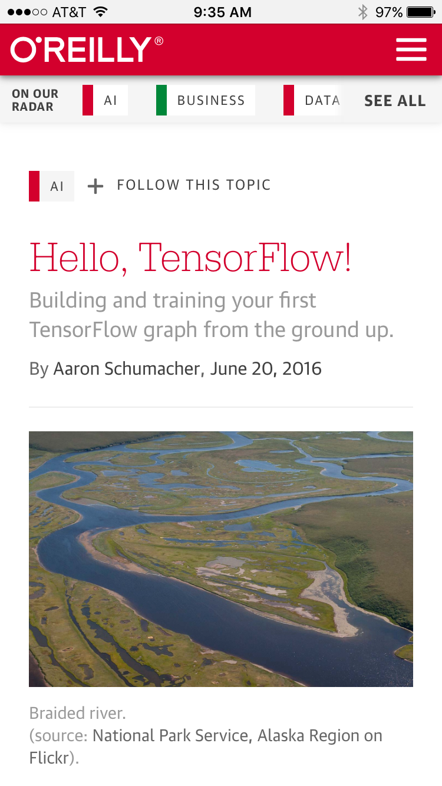
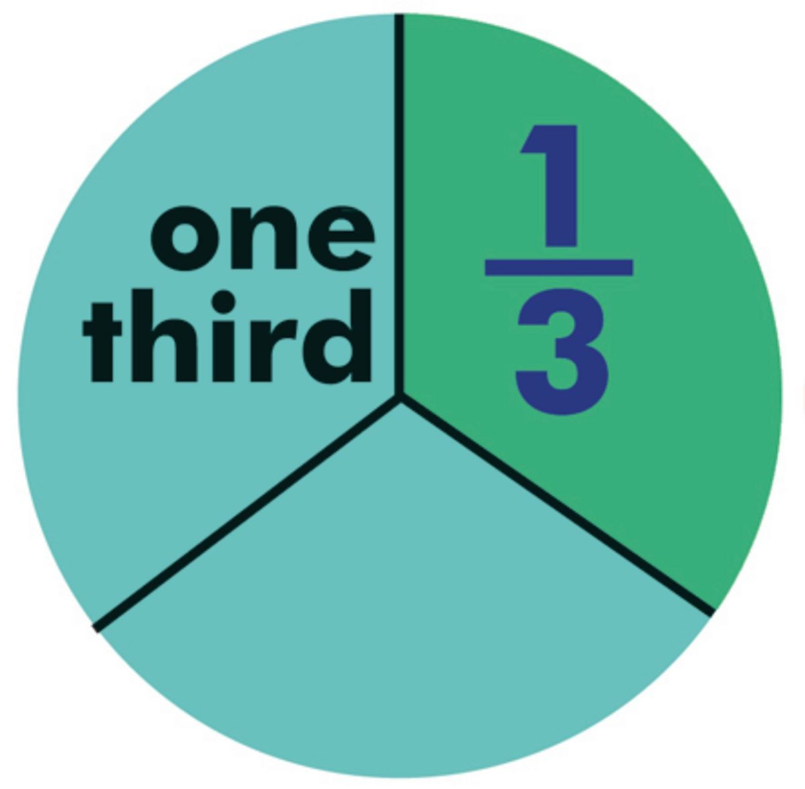
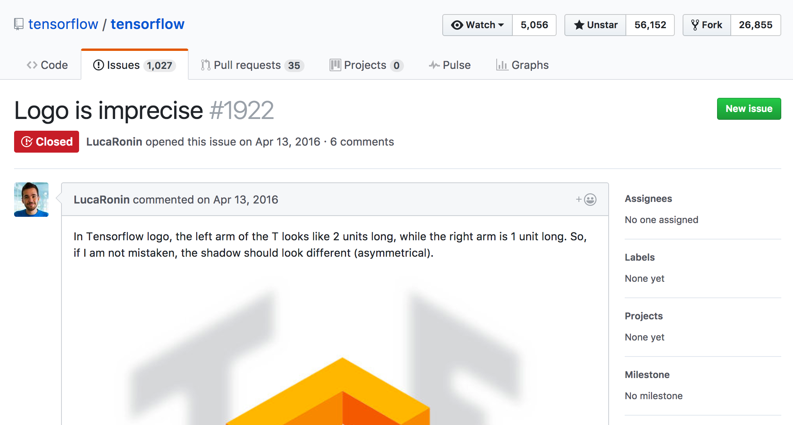
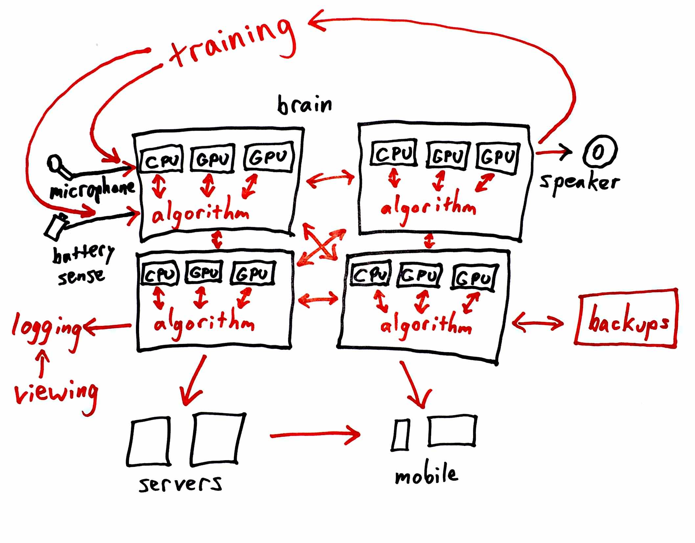
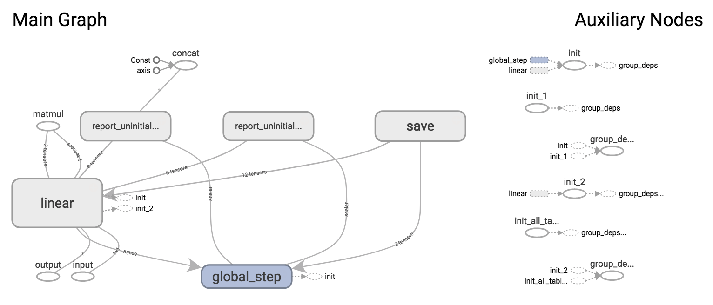
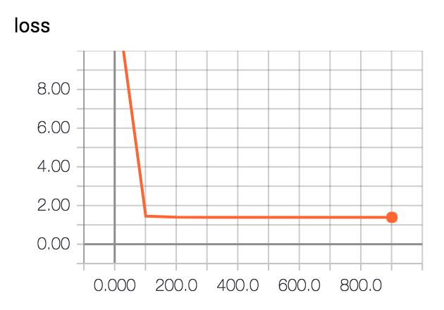

Thank you!
@planarrowspace
$ pip install --upgrade tensorflow
$ pip freeze | grep tensorflow
## tensorflow==1.1.0

$ pip install --upgrade tensorflow
$ pip freeze | grep tensorflow
## tensorflow==1.1.0THE BIG IDEA
use what you need
THE PLAN
Do what you want!
Intro by Logo




short work
draw a system!
short work over
Let's do hard AI!
(build)

What even is TensorFlow?


graph or not graph?
(notebook)
long work
work with data!
mystery.tfrecordslong work over

command-line arguments
$ python script.py --color red
a red flowerimport sys
def main():
assert sys.argv[1] == '--color'
print('a {} flower'.format(sys.argv[2]))
if __name__ == '__main__':
main()import sys
import tensorflow as tf
flags = tf.app.flags
flags.DEFINE_string(flag_name='color',
default_value='green',
docstring='the color to make a flower')
def main():
flags.FLAGS._parse_flags(args=sys.argv[1:])
print('a {} flower'.format(flags.FLAGS.color))
if __name__ == '__main__':
main()import sys
import gflags
gflags.DEFINE_string(name='color',
default='green',
help='the color to make a flower')
def main():
gflags.FLAGS(sys.argv)
print('a {} flower'.format(gflags.FLAGS.color))
if __name__ == '__main__':
main()import sys
import argparse
parser = argparse.ArgumentParser()
parser.add_argument('--color',
default='green',
help='the color to make a flower')
def main():
args = parser.parse_args(sys.argv[1:])
print('a {} flower'.format(args.color))
if __name__ == '__main__':
main()import tensorflow as tf
def main(args):
assert args[1] == '--color'
print('a {} flower'.format(args[2]))
if __name__ == '__main__':
tf.app.run()import tensorflow as tf
flags = tf.app.flags
flags.DEFINE_string(flag_name='color',
default_value='green',
docstring='the color to make a flower')
def main(args):
print('a {} flower'.format(flags.FLAGS.color))
if __name__ == '__main__':
tf.app.run()import google.apputils.app
import gflags
gflags.DEFINE_string(name='color',
default='green',
help='the color to make a flower')
def main(args):
print('a {} flower'.format(gflags.FLAGS.color))
if __name__ == '__main__':
google.apputils.app.run()import argparse
parser = argparse.ArgumentParser()
parser.add_argument('--color',
default='green',
help='the color to make a flower')
def main():
args = parser.parse_args()
print('a {} flower'.format(args.color))
if __name__ == '__main__':
main()Whew!
MapReduce example
tf.device()
with tf.device('/cpu:0'):
# Do something.with tf.device('/gpu:0'):
# Do something.with tf.device('/job:ps/task:0'):
# Do something.

(demo)
(code)
long work
make something happen!
long work over


(notebook)




long work
make something happen!
long work over
What else?
debugging, optimizing (XLA, low-precision, etc.), serving, building custom network architectures, embeddings, recurrent, generative, bazel, protobuf, gRPC, queues, threading...
Thanks!
@planarrowspace